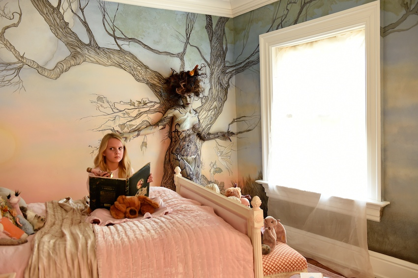
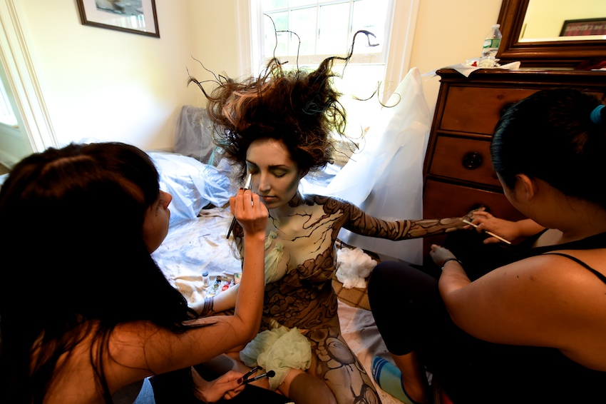

As we enter a very different, 2020 version of Halloween upcoming, I hark back to Halloween pictures past with the blog below. Fun memories and an amazing shoot day.
And, teasing this, as we are about to launch Chapter Three
of The Pointe Shoe Mysteries on Adorama TV. A Halloween edition! What dastardly deed might occur in the world of ballet, as we celebrate this spooky holiday?
But, back to the blog at hand, or, previously in hand. A while
ago, I was beset with notions of Halloween and how to express them visually. Those ruminations took shape as our team in the studio, particularly the amazing Lynn DelMastro, who does actively live in fear of what my imagination
might trigger in terms of production difficulties, started to construct real time stuff to express my fanciful photo conjuring. Witness below, a blank room. Which of course Lynn found. And then, what it became, after some mural
painting, propping, and lighting.
I don’t know why the folks at Nikon and the Photo Plus Expo administration listened to me back then when I came to them with Halloween ideas. For someone such as myself, raised up on comic books and the dark fantasies of Mordor, the notion of distressed trick or treaters, of small children poised on the verge of fantastical disaster and mayhem was completely normal. I was somewhat nonplussed then, when most people I tried to explain my ideas to would listen politely, tilt their head, look at me and say, “Sounds cool. You’re a sick bastard.”
PPE, the photo extravaganza, happened that year on Halloween. So, why not create some spooky, fun pics to advertise it? Doing these snaps immediately combined a lot of things I love. Being on location. Struggling my way through complex lighting scenarios. Being with a crew of talented people. Body painting people into other worldly wonders. And mostly, letting my imagination out for a healthy romp.
In this scenario, I conjured a little girl, reading a scary story by flashlight, long after she should have gone to sleep. Her wall is a wonderfully innocent mural of leafy woodlands, filled with faeries and other mild mannered
creatures of the forest. Except for one, who seems to be coming alive, literally out of the woodwork, a malevolent creature, one with mischief and more on her mind. She is freaking out the other faeries, who would warn the
little girl….if only they could.
The key to a job like this is preparation, and the assemblage of a bunch of amazing skill sets. The empty room had to first be illustrated with a vibrant, richly done mural. Dana Heffern, a terrific painter, worked in this room for eight days prior to the shot, creating the dreamy woodlands. A truly brilliant body painter, Anastasia Durasova, combined with hair stylist Jerome Cultrera transformed the lovely Tanya Sinkevica into the creature living in the wall.